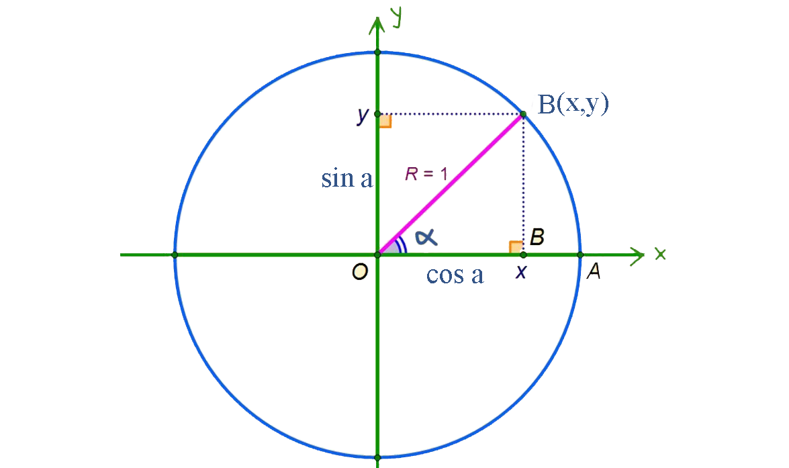
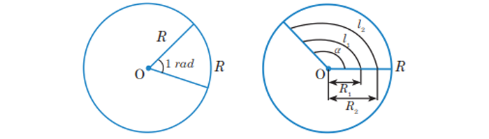

Şol bir argumentli trigonometrik funksiýalaryň arasyndaky baglanyşyklar.

Pifagoryň teoremasyna görä,
BC2 + OC2 = OB2
BC = y = sinα , OC = x = cosα, OB = R = 1 bolanlygyna görä
sin2α + cos2α = 1 - muňa esasy trigonometrik toždestwo diýilýär.
Tangensiň we kotangensiň kesgitlemesine görä:
tgα=
;
ctgα=
tgα*ctgα = 1
1+ tg2α =
1+ ctg2α =
Dugasynyň uzynlygy radiusyna deň bolan merkezi burça 1 radianlyk burç diýilýär

1o=
≅ 0,017rad;
1rad =
≅ 57o 17' 45''
San argumentli trigonometrik funksiýalar.
Kesgitleme: Birlik töweregiň P0 başlangyç nokadynyň α radian burça öwrülmesinden alnan Pα nokadyň ordina
tasyna α sanyň sinusy, absissasyna bolsa α sanyň kosinusy diýilýär.